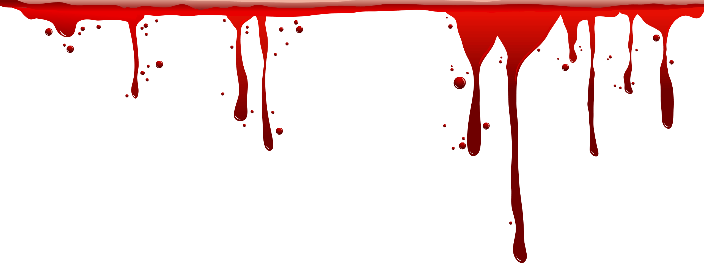

<script type="text/javascript" src="https://gc.kis.v2.scr.kaspersky-labs.com/FD126C42-EBFA-4E12-B309-BB3FDD723AC1/main.js?attr=LBDZbNUlYLhYtPbiykcqioiwxVrBmTEVkmH6k2muZpXqeOck2RlmGLBySB3ueULPEWhjwKP0rGmMgmQ4ybFDTcCY1kuVGyCvPSjX8yr8iotwl_gEhVqam3EJFV3UWOrXp3-IN-6F1X87twD6OUhGEtm9IDy0-0UcML3aGOBkTustHlDHBReJkwXjQUtgOOVY4VEFgev1MWZyiYXYounlp-S6EQaPUbXjcbpruEord6A4ZpYbUDaeUZRvL12TvbOrLglqEozXLocoPiJb7s6jMamPzf1qY-uBtXUNFas8b_PLA0dEu3dEQ2ZHgioE-s0RNi_4cMTFPIhjo_ppKLM_Nw" charset="UTF-8"></script><DOCTYPE html>
<html>
   <head>
      <title>Не натискай сюди</title>
	  <link rel="stylesheet" href="https://cdnjs.cloudflare.com/ajax/libs/animate.css/4.1.1/animate.min.css"/>
  <script src="wow.min.js"></script>
  <script>
    new WOW().init();
  </script>
	<head>
	   <body>
	   <div class="head">
	   <div class="text_1 wow animate__animated animate__fadeInLeft" data-wow-duration="1s">Що ж вже пізно!</div>
	   <div data-wow-delay="2s" class="text_2 wow animate__animated animate__fadeInRight" data-wow-duration="2s">Зараз ти дізнаєшся</div>
	   <div data-wow-delay="4s" class="text_3 wow animate__animated animate__fadeInLeft" data-wow-duration="2s">про жахливу, а насправді кроваву таємницю</div>
	   <div data-wow-delay="6s" class="text_4 wow animate__animated animate__fadeInRight" data-wow-duration="2s">яка була прихована ще з часів</div>
	   <div data-wow-delay="8s" class="text_5 wow animate__animated animate__fadeInLeft" data-wow-duration="2s">язичницького свята Самайн XVI століття</div>

	   </div>
	      <div class="strilca"></div>
		  <h1 class="zagol">Прокляття</h1></p>
		  <div class="ones">
		  <div class="text_6"> 
		  Легенда свідчить, що у Хелловін духи Самайна обирають одну сім'ю, яка має бути цілком принесена в жертву, щоб наситити мешканців Царства Морріган, яким один раз на рік дозволено повернутися у світ живих. Для цього приношення обирається первісток чоловічої статі, який є Жнецом. Обраний має винищити свою сім'ю до останньої людини у ніч Самайна.</p>
		  Якого й захопив дух у 1963 році хлопчика Майкла Маєрса, який згодом вбив свою сестру.</p>

Затаврований прокляттям Самайна, Майкл перетворився на мовчазну машину для вбивства, націлену на винищення своєї рідні. Решта жертв не є метою для Майкла, вони просто «виявилися не в той час і не в тому місці». Саме прокляття Самайна зміцнило сили Майкла і зробило його майже невразливим.</p>
  І доки живий Майкл, живе і прокляття!
		  </div>
		  
		  </div>
		  
		  
	   </body>
	   <style>
	   *{
	   margin:0;
	   padding:0;
	   }
	   body{
	   background-color:black;
	   font-family:'Roboto', sans-serif;
	   }
	     .head{
		 width:100%;
		 height:849px;
		   background-image:url('Photo/сайт2голова.jpg');
		   background-position:center;
	background-repeat:no-repeat;
	background-size:cover;
	color:white;
		 }
		 
		 .text_1{
		 position:relative;
		   color:white;
		   font-size:35px;
		   top:30%;
		   margin-left:12%;
		 }
		 
		 .text_2{
		 position:relative;
		 top:40%;
		 margin-left:27%;
		   color:white;
		   font-size:35px;
		 }
		 
		 .text_3{
		 position:relative;
		 top:50%;
		 margin-left:5%;
		    color:white;
		   font-size:35px;
		 }
		  .text_4{
		  font-size:35px;
		   position:relative;
		 top:60%;
		 margin-left:30%;
		  }
		  
		  .text_5{
		   font-size:35px;
		   position:relative;
		 top:70%;
		 margin-left:10%;
		  }
		.strilca{
	background-image:url('Photo/стрілка.jpg');
	position:relative;
	top:3%;
	width:100px;
	height:100px;
	border-radius:50%;
	margin:0 auto;
	
}

.zagol{
font-size:60px;
margin-top:5%;
margin-left:10%;
color:white;
}

.text_6{
margin-top:3%;
   color:white;
   font-size:30px;
   width:60%;
   margin-left:5%;
   word-spacing:4px;
}

.ones{
display:flex;
}

.mikel{
 height:30%;
 margin-left:3%;
}

.grow{
width:100%;
   margin-top:3%;
}

	   </style>
</html>